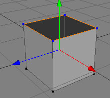
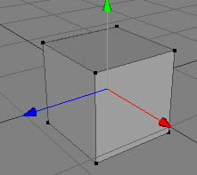

Create Polygon Tool
The create polygon tool is needed to build up polygons from scratch. You can use either existing points or create new ones for building up a new polygon.
Attention: Cheetah3D cares about the winding with which you create the polygons. So create your polygons always with a counter clock wise winding. Otherwise the newly created polygon might appear dark shaded.
Modes
The create polygon tool is only available in point, edge and polygon mode and can only be applied on raw polygon objects.


Let's assume that you already have a raw polygon object which contains some points. To build up a new polygon you just have to click on the points in the 3D view which should be the corners of the new polygon. The selected points should now appear blue and the new edges should appear in orange. Once you have clicked on all corner points you have to click once again on the starting point to finally create the polygon. Alternatively you can double click on the last point to create the polygon .
To create new points with the create polygon tool just click into the empty space.
 
Keys
- ESC: Reset the create polygon tool.
Properties
- Type: With this property you can choose the type or mode of the create polygon tool.
- N-Gons: Creates N-Gons (polygons with N edges).
- quad-strip: Creates a quad strip. This means that the first four points of the selection will be used to create a quad. But now the last to points will be remembered by the tool and you only have to add another two new points to create the next polygon.
- triangle-strip: Same as a quad strip just with triangles.
- New points in:
- camera plain: New points will be created in the camera plain.
- main plain: New points will be created on the main coordinates system plains.
- Intersect scene: New points will be created at the intersection point with the scene.